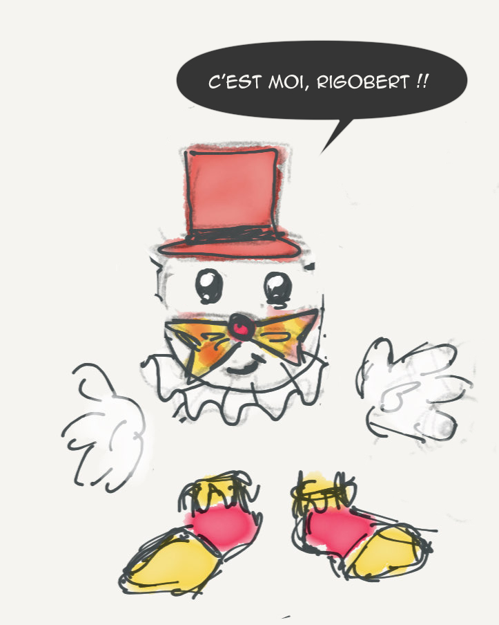

Création de l'identité d'une association à travers une mascotte & une appliaction ludo-éducative
Ce projet a été réalisé dans le cadre d’un atelier créatif autour de la communication pour une association. Le brief portait sur Le Rire Médecin, une organisation qui fait intervenir des clowns professionnels à l’hôpital pour aider les enfants à mieux vivre leur hospitalisation.
L’objectif était de proposer un concept original de mascotte, avec son storytelling, son design, et une application ludo-éducative qui l’accompagne.
On a d’abord réfléchi à une mascotte qui soit attachante, mais surtout facile à s’approprier pour les enfants. C’est comme ça qu’est né Rigobert, un personnage drôle, un peu loufoque, qui n’a pas vraiment de corps fixe. Il change tout le temps, grâce aux déguisements que les enfants lui inventent.
L’idée était de renverser les rôles : ce n’est pas la mascotte qui amuse l’enfant, c’est l’enfant qui fait vivre la mascotte. Il devient acteur, créatif, et ça l’aide à sortir du cadre stressant de l’hôpital.
C'est comme ça qu'est né Rigobert.

En plus du personnage, on a imaginé une application simple, pensée pour être utilisée à l’hôpital, même sans Wi-Fi. Elle permet à l’enfant de créer les costumes de Rigobert, de recevoir des messages vocaux personnalisés, et de suivre une petite histoire interactive où Rigobert change chaque jour grâce à lui.
L’appli est pensée comme un compagnon de jeu, mais aussi comme un outil d’évasion, de réconfort et de lien avec la famille ou les soignants.
Ce projet m’a permis de réfléchir à la place de l’émotion dans la communication. Il ne s’agissait pas seulement de faire un joli design ou une appli sympa, mais de répondre à un vrai besoin humain. J’ai aussi appris à travailler avec un ton adapté à un jeune public, à construire une narration cohérente, et à penser une interface ludique mais simple.
Pour en savoir plus sur Rigobert & Moi, le dossier d'analyse des attentes est juste en bas.
Le dossier d’analyse des attentes